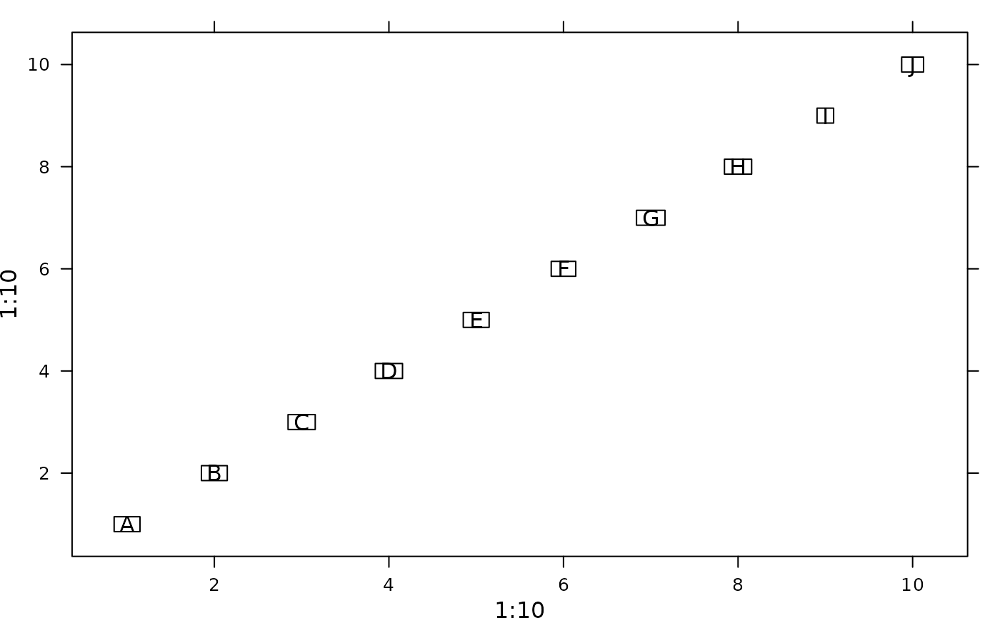

Panel function for adding labels.
adeg.panel.label.RdPanel function for drawing labels into a trellis graphic (lattice
package) with or without boxes around labels.
Arguments
- x
a numeric vector, x-coordinates for the labels
- y
a numeric vector, y-coordinates for the labels
- labels
a vector of character string, the labels
- plabels
a list of parameters as an extract of
adegpar("plabels"), used for labels' drawing. Each value can be a vector and will be recycled if necessary:alpha,cex,col: drawing parameters for the textsrt: orientation of the labels,horizontal,verticalor an angle indication (in degrees). Boxes are not rotated. If the orientation is not near tohorizontal/vertical(0/90), it is best not to draw the boxesoptim: logical. If TRUE, uses an algorithm trying to avoid labels' overlapping and outside limitsboxes: concerns the label's boxes. a list:draw: logical. If TRUE, labels are framedalpha,border,col,lwd,lty: rule transparency, border lines and background color
- pos
a position specifier for the text, used in panel.text. Values of
1,2,3and4respectively indicate positions below, to the left of, above and to the right of the specified coordinates.
References
The algorithm used for labels positions optimization is inspired by the pointLabel
function of the car package (since 2022-10-22, moved from the the maptools package, developed by Tom Short).
Author
Alice Julien-Laferriere, Aurelie Siberchicot aurelie.siberchicot@univ-lyon1.fr and Stephane Dray
Note
For more information about the use of panel functions, please see the lattice package developed by Deepayan Sarkar.
Examples
if(require(lattice, quietly = TRUE)) {
param <- adegpar("plabels")[[1]]
xyplot(1:10 ~ 1:10, panel = function(x, y, ...){
adeg.panel.label(x, y, LETTERS[1:10], plabels = param)})
}

if(require(lattice, quietly = TRUE)) {
param$boxes$draw <- FALSE
param$col <- "blue"
xyplot(1:10 ~ 1:10, panel = function(x, y, ...){
adeg.panel.label(x, y, LETTERS[1:10], plabels = param)})
}